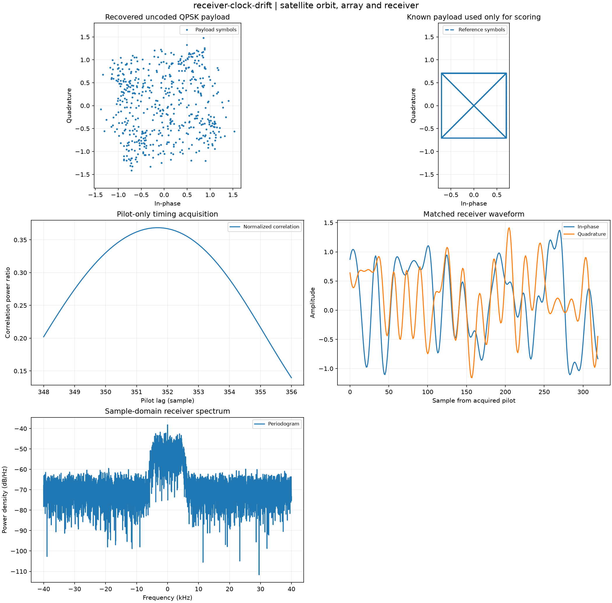

Reproducible satellite orbit, array and receiver. Units and field components are printed on the scientific axes. peak d-q quantities use exp(+i omega t); terminal currents point into the protected line.
Sealed numeric archive | Summary CSV | Physical parameters | Run request | Source and environment

| ber | 0.275390625 |
|---|---|
| bit_errors | 282 |
| bits | 1024 |
| clipped_samples | 0 |
| estimated_lag_samples | 351.625 |
| estimated_offset_hz | 39.1389649358513 |
| evm_rms | 0.9355642411263704 |
These are simulations, not hardware measurements. Network-model, measurement, timing and statistical uncertainty require distinct convergence checks. Singular or unilluminated data use explicit masks.
Source revision: 05231131f921489a3886ccbb7412a65087ae53f6.
Dirty checkout: False.
Configuration SHA-256: 2094ce66da732324e12c4d5bf924863461f01c1eb9a212b801351fd3d1b4d4d1.
Replay preserves original source and parameter provenance. SHA-256 manifests detect changed bytes; they are unsigned integrity records, not certificates of physical validity.